📘 01_guardrail_concept_architecture
개요 슬라이드 실습 도움말
STEP 01 · GUARDRAIL CONCEPT ARCHITECTURE
Guardrail 개념과 아키텍처
AI 서비스의 입력·출력에 Guardrail을 배치하는 이유와 전체 처리 흐름을 설명한다.
입력 가드레일과 출력 가드레일의 차이 모델 호출 전 정책 검사와 모델 호출 후 출력 검열 프롬프트 인젝션, 유해 요청, PII 노출의 기본 위협 허용·차단·검토 상태와 보안 이벤트의 관계
개요 — STEP 01 학습 내용
이론적 배경 LLM은 입력을 문맥적으로 해석하고 출력을 확률적으로 생성하므로, 애플리케이션의 보안 정책을 항상 일관되게 지킨다고 가정할 수 없다. 정상적인 질문에도 민감정보가 포함될 수 있고, 공격자는 지시문을 바꾸어 모델의 원래 목적을 우회할 수 있다.
따라서 모델 자체에 모든 책임을 두지 않고, 모델 호출 전후에 별도의 통제 계층을 둔다. 1단계에서는 이 계층이 어디에 위치하고 어떤 실패를 막는지 이해하는 것이 이후 정책·검열·관제 학습의 출발점이다.
학습 목표 AI 서비스의 입력·출력에 Guardrail을 배치하는 이유와 전체 처리 흐름을 설명한다.
핵심 내용 입력 가드레일과 출력 가드레일의 차이 모델 호출 전 정책 검사와 모델 호출 후 출력 검열 프롬프트 인젝션, 유해 요청, PII 노출의 기본 위협 허용·차단·검토 상태와 보안 이벤트의 관계 이론 보강 Guardrail은 모델 자체를 바꾸는 기능이 아니라 모델 앞뒤에 정책 집행 지점을 두는 운영 계층이다. 입력 단계에서는 요청의 목적·권한·위험 신호를 확인하고, 출력 단계에서는 모델이 생성한 결과가 공개되어도 되는지 다시 검사한다.
입력 검사만으로는 모델의 민감정보 생성을 막을 수 없고, 출력 검사만으로는 위험한 요청이 모델에 전달되는 문제를 막을 수 없다. 따라서 두 계층은 독립적으로 실패해도 안전한 기본값을 반환하도록 설계해야 한다.
운영 로그에는 원문 전체보다 판정 결과, 규칙 ID, 위험 등급, 이벤트 ID를 우선 기록한다. 원문이 필요한 경우에는 접근권한과 보존기간을 별도로 적용한다.
산출물 · 완료 기준 Guardrail 아키텍처 요약 입력·출력 검사 지점 표 위협 시나리오별 통제 지점 입력 가드레일과 출력 가드레일의 역할을 구분하고, 모델 호출 전후의 처리 순서를 설명할 수 있다.
프로젝트 구조
01_guardrail_concept_architecture/
index.html — 포털 페이지
readme.md — 단계 학습 문서
slides/ readme.md — 단계 학습 문서
s00-tech-spec.svg — 슬라이드 SVG
s01-guardrail-flow.svg — 슬라이드 SVG
s02-guardrail-architecture.svg — 슬라이드 SVG
s03-threats-and-controls.svg — 슬라이드 SVG
s04-architecture-source.svg — 슬라이드 SVG
s05-practice-order.svg — 슬라이드 SVG
s06-architecture-checklist.svg — 슬라이드 SVG
s07-summary.svg — 슬라이드 SVG
src/ architecture.py — 파이프라인 단계 정의
tests/ test_architecture.py — 1단계 파이프라인 분기 단위 테스트
소스코드 설명 파일 역할·내용 src/architecture.py가장 작은 가드레일 파이프라인 — PipelineStage dataclass로 요청 경로의 각 통제 지점을 정의하고 순서대로 실행하는 결정론적 데모. 이후 단계에서 모델·가드레일 구현만 교체하면 되는 골격.
단계 간 연결: [2단계 →](../02_llama_guard_nemo_guardrails/readme.md) · [전체 과정](../readme.md)
상위 프로젝트: 10 통합 프레임워크 readme → (도움말 탭에서 뷰어로도 열람 가능)
슬라이드 — 발표 자료 (SVG)
s00-tech-spec · 기술 사양 (참고용) SVG
s01-guardrail-flow · Guardrail 전체 처리 흐름 SVG
s02-guardrail-architecture · Guardrail 아키텍처 SVG

s03-threats-and-controls · Guardrail 위협과 통제 SVG

s04-architecture-source · 아키텍처 소스코드 SVG
s05-practice-order · 실습 순서 SVG
s06-architecture-checklist · 복습 체크리스트 SVG
s07-summary · 핵심 요약과 실습 질문 SVG
실습 — STEP 01 실행
아래 명령은 터미널 에서 프로젝트 루트(ai-guardrails-ops/) 기준으로 실행합니다.
실행 방법
복사 버튼으로 명령을 가져간 뒤 터미널에 붙여넣기 (⌘V) 하세요.
python3 01_guardrail_concept_architecture/src/architecture.py복사
실행 결과 예시 input_guardrail: 모델 호출 전 — 입력 정책과 위험 요청 검사
model: 모델 호출 — 허용된 요청 처리
output_guardrail: 모델 호출 후 — PII·비밀정보·유해 출력 검사
monitoring: 항상 — 이벤트 기록과 대응 연결
실습 결과: decision=allow / response=더미 모델 응답: Guardrail의 기본 흐름을 설명해줘실습 단계 사용자 입력 → 입력 가드레일 → 모델 → 출력 검열 → 관제 흐름을 그린다. 각 단계의 검사 대상과 실패 시 대응을 정의한다. course-flow.svg 와 s01-guardrail-flow.svg 를 기준 자료로 확인한다.추가 명령 python 01_guardrail_concept_architecture/src/architecture.py
# 단위 테스트 (선택, 오프라인)
python -m unittest discover -s 01_guardrail_concept_architecture/tests -v복사 소스 구조
파일·디렉터리 역할 경로 역할 src/architecture.pyPipelineStage 정의와 더미 모델 기반 최소 파이프라인 실행slides/s00-tech-spec.svg1단계에 필요한 Python·표준 라이브러리 기술 사양 slides/s01-guardrail-flow.svg전체 입력·출력 가드레일 처리 흐름 slides/s02-guardrail-architecture.svgGuardrail 아키텍처와 통제 위치 slides/s03-threats-and-controls.svg위협 유형과 통제 지점 slides/s04-architecture-source.svgarchitecture.py 소스 설명과 실행 방법slides/s05-practice-order.svg실습 순서 — architecture.py 실행·테스트 명령 slides/s06-architecture-checklist.svg1단계 복습 체크리스트 slides/s07-summary.svg1단계 핵심 요약과 질문 slides/readme.md슬라이드 순서·제목·산출물 목록
※ 브라우저에서는 실행할 수 없습니다 — 명령을 복사해 터미널에 붙여넣으세요.
도움말 — 페이지 사용법
탭 전환
상단 내비게이션을 클릭하면 해당 패널이 표시됩니다. 주소창 해시(#tab-slides 등)로 특정 탭에 바로 이동할 수 있습니다.
SVG 뷰어
슬라이드 탭의 SVG 이미지를 클릭 하면 팝업 뷰어로 확대 표시됩니다
뷰어에서 ‹ › 버튼 또는 ← → 키로 이동합니다
ESC · ✕ 닫기 · 어두운 배경 클릭으로 닫습니다
readme 문서
아래 버튼으로 마크다운 문서를 뷰어 팝업으로 확인할 수 있습니다.
readme.md 열기
slides/readme.md 열기
단축키
키 동작 ← →뷰어에서 이전/다음 슬라이드 ESC뷰어 닫기
참고
이 페이지는 서버 없이 동작합니다 — index.html을 브라우저로 바로 열면 됩니다
뷰어의 readme 내용은 페이지 생성 시점의 스냅샷입니다 — 원본이 수정되면 페이지 재생성이 필요합니다
01_guardrail_concept_architecture · STEP 01 학습 자료
1단계 · Guardrail 개념과 아키텍처
이론적 배경
LLM은 입력을 문맥적으로 해석하고 출력을 확률적으로 생성하므로, 애플리케이션의 보안 정책을 항상 일관되게 지킨다고 가정할 수 없다. 정상적인 질문에도 민감정보가 포함될 수 있고, 공격자는 지시문을 바꾸어 모델의 원래 목적을 우회할 수 있다.
따라서 모델 자체에 모든 책임을 두지 않고, 모델 호출 전후에 별도의 통제 계층을 둔다. 1단계에서는 이 계층이 어디에 위치하고 어떤 실패를 막는지 이해하는 것이 이후 정책·검열·관제 학습의 출발점이다.
학습 목표
AI 서비스의 입력·출력에 Guardrail을 배치하는 이유와 전체 처리 흐름을 설명한다.
핵심 내용
입력 가드레일과 출력 가드레일의 차이 모델 호출 전 정책 검사와 모델 호출 후 출력 검열 프롬프트 인젝션, 유해 요청, PII 노출의 기본 위협 허용·차단·검토 상태와 보안 이벤트의 관계 이론 보강
Guardrail은 모델 자체를 바꾸는 기능이 아니라 모델 앞뒤에 정책 집행 지점을 두는 운영 계층이다. 입력 단계에서는 요청의 목적·권한·위험 신호를 확인하고, 출력 단계에서는 모델이 생성한 결과가 공개되어도 되는지 다시 검사한다.
입력 검사만으로는 모델의 민감정보 생성을 막을 수 없고, 출력 검사만으로는 위험한 요청이 모델에 전달되는 문제를 막을 수 없다. 따라서 두 계층은 독립적으로 실패해도 안전한 기본값을 반환하도록 설계해야 한다.
운영 로그에는 원문 전체보다 판정 결과, 규칙 ID, 위험 등급, 이벤트 ID를 우선 기록한다. 원문이 필요한 경우에는 접근권한과 보존기간을 별도로 적용한다.
실습
사용자 입력 → 입력 가드레일 → 모델 → 출력 검열 → 관제 흐름을 그린다. 각 단계의 검사 대상과 실패 시 대응을 정의한다. course-flow.svg 와 s01-guardrail-flow.svg 를 기준 자료로 확인한다.실습 코드는 src/architecture.py에서 실행한다. 1단계는 실제 LLM을 호출하지 않고
결정적인 더미 모델로 입력 → 모델 → 출력 → 관제의 삽입 지점을 실행한다. 이후 단계는
이 파이프라인의 각 위치를 실제 provider·정책·관제 기능으로 확장한다.
python 01_guardrail_concept_architecture/src/architecture.py
# 단위 테스트 (선택, 오프라인)
python -m unittest discover -s 01_guardrail_concept_architecture/tests -v복사 산출물
Guardrail 아키텍처 요약 입력·출력 검사 지점 표 위협 시나리오별 통제 지점 단계 간 연결
2단계 → · 전체 과정
1단계는 공통 실행 환경과 Guardrail 단계 정의를 제공한다. 다음 단계는 이 정의를 바탕으로 분류기와 대화 정책의 적용 위치를 결정한다.
완료 기준
입력 가드레일과 출력 가드레일의 역할을 구분하고, 모델 호출 전후의 처리 순서를 설명할 수 있다.
파일·디렉터리 역할
경로 역할 src/architecture.pyPipelineStage 정의와 더미 모델 기반 최소 파이프라인 실행slides/s00-tech-spec.svg1단계에 필요한 Python·표준 라이브러리 기술 사양 slides/s01-guardrail-flow.svg전체 입력·출력 가드레일 처리 흐름 slides/s02-guardrail-architecture.svgGuardrail 아키텍처와 통제 위치 slides/s03-threats-and-controls.svg위협 유형과 통제 지점 slides/s04-architecture-source.svgarchitecture.py 소스 설명과 실행 방법slides/s05-practice-order.svg실습 순서 — architecture.py 실행·테스트 명령 slides/s06-architecture-checklist.svg1단계 복습 체크리스트 slides/s07-summary.svg1단계 핵심 요약과 질문 slides/readme.md슬라이드 순서·제목·산출물 목록